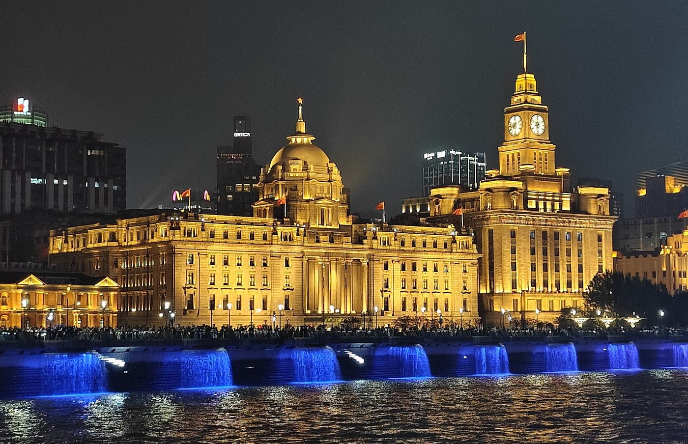
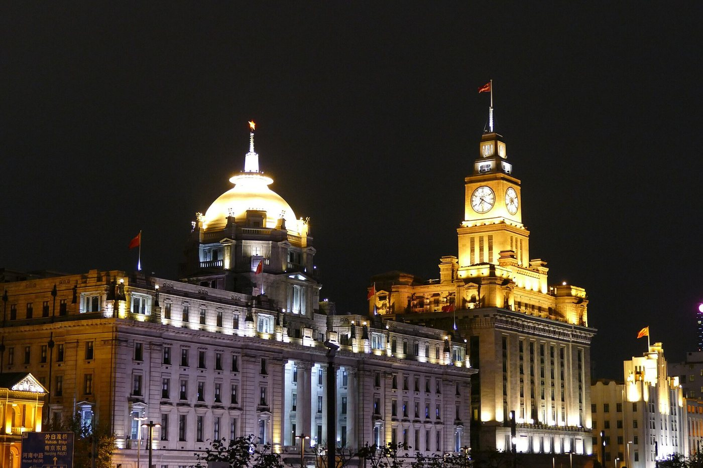
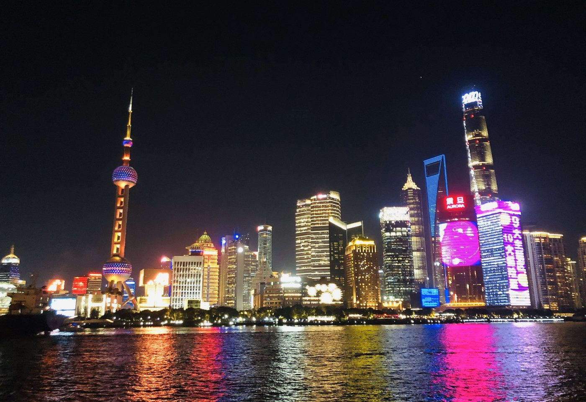

The Bund at dusk 外滩（中山东一路）
Waterfront promenade at dusk and skyline view · Huangpu
CheckedLights 18:00 to 22:00 · 18 Nov 2026




Be there by 16:30 for sunset at about 16:50, then stay as the lights come on. Free, no gate.
Why it matters
The Bund's history and the reopened Bund Signal Tower are covered on a separate card under Historic places. This card is the dusk plan: one walk shows the 1920s riverfront facing Pudong's modern towers, with the lights coming on after sunset.
What to see
South to north: the Bund Signal Tower (reopened Oct 2026, at the south end), old HSBC building (No. 12), Customs House (No. 13), Peace Hotel (No. 20), Huangpu Park, then Waibaidu Bridge. Opposite: Oriental Pearl, Jin Mao and Shanghai Tower.
How to get there
Line 10 to East Nanjing Road, walk east to the river (about 10 min), then north along the promenade to Waibaidu Bridge. Leave by Line 10 or a taxi.
Local tip
Stay for lighting-up: the 38 buildings go from dark to fully lit in under 10 seconds. The river wind is cold in late November (about 5-14 C).
Watch out
Very crowded on holidays (29,112 people on the waterfront at 16:00 on 1 Oct 2026). The Public Garden barred Chinese people 1890-1928, except amahs minding foreign children; the 'No dogs or Chinese' sign wording is a myth.
Did you know
The Waibaidu Bridge (Garden Bridge), opened 20 Jan 1908, is usually billed as China's first all-steel riveted bridge. In 2008-09 it was floated off on barges for about ten months of repairs, then floated back.
Look for the rivet heads on the steel truss: about 63,000, roughly 40% of the total, were replaced with look-alike copies in the 2008-09 repair.
Caveat and sources
'First' is a local boast: a steel railway bridge over the Yellow River at Zhengzhou opened in Nov 1905. Dates vary by source (1907 or 1908). About 63,000 of roughly 160,000 rivets were replaced (Hongkou district account). It is a working road; a Sep 2026 notice closed it to vehicles only for a parade.
Did you know
In 1992-93 the Bund's flood-wall line moved 6 to 49 m toward the river (one 2019 retrospective), giving a 1.8 km wall with a car park inside. A 3.3 km tunnel for through traffic opened on 28 March 2010.
At the railing facing Pudong you stand on top of a 1990s flood wall and car park; the old riverbank lay inland of you.
Caveat and sources
The 6 to 49 m figure is single-source (The Paper, 2019); Chinese Wikipedia says only 'dozens of metres'. The Bund buildings are lit by a timer, 19:00-23:00 in August 2026; no winter schedule was found, so check on site. Of the tunnel you see only the ramps.
Did you know
The one-line 'No dogs or Chinese allowed' sign at Huangpu Park is a legend. What is documented: 1885 park rules banned dogs and bicycles and, separately, Chinese except servants; Chinese were admitted from 1 June 1928.
Historians separate what the posted rules said from the catchy one-line sign, which also appears in the 1972 film Fist of Fury.
Caveat and sources
Robert Bickers, who checked the Council's archives, found no board with that wording; the story spread from 1914 (a 1903 diary quotes a different wording). Dates differ: exclusion from 1885 or 1890; the 1928 vote 18 or 19 April; admission 1 June (one source: 1 July). Park: free, open all day (undated listing). Bund History Museum: no 2025-26 evidence it is open.
- The Paper (Wang Limin, Dang'an Chunqiu), 2019thepaper.cn Opens in a new tab
- Robert Bickers, Historical Photographs of China blog, 2014hpchina.blogs.bristol.ac.uk Opens in a new tab
- English Wikipedia (Huangpu Park)en.wikipedia.org Opens in a new tab
- Chinese Wikipedia (the sign article)zh.wikipedia.org Opens in a new tab
What was checked, and what was not
Read on 18 Nov 2026
Confirmed open and busy in 2026: 29,112 on the waterfront on 1 Oct 2026 (The Paper), nightly lighting (Aug 2026) and the Signal Tower reopening (18 Oct 2026). History checked against Wikipedia. The government information office's lighting notice of 31 Oct 2026 was read 18 Nov 2026.
Not checked
Former HSBC hall tours and Bund History Museum hours are unconfirmed; lighting times can change for events (the 31 Oct notice shows temporary changes on 4 to 6 Nov).